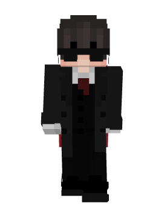

DracoCraft !
Une survie
Bienvenue sur DracoCraft, une survie multijoueur créée par Fire_Draco, avec Goodgopa et Fulbion.

DracoCraft est une série survie quasiment entièrement streamée sur Twitch créée en mars 2022 (on s'en fout mais c'est bien de préciser).
Les joueurs principaux de la survie sont Fire_Draco, Goodgopa, et Fulbion (aka le n00b).
La série DracoCraft est divisée en plusieurs saisons, histoire de pouvoir se renouveler et à faire des concepts toujours plus intéressants !
Les joueurs principaux de la survie sont Fire_Draco, Goodgopa, et Fulbion (aka le n00b).
La série DracoCraft est divisée en plusieurs saisons, histoire de pouvoir se renouveler et à faire des concepts toujours plus intéressants !